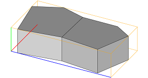
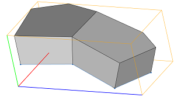
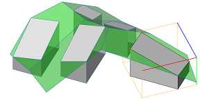

extrude operation
Syntax
extrude(distance)
extrude(extrusionType, distance)
Parameters
- distance (float)
How many units to extrude. - extrusionType (selector)
world.up Extrudes faces along the world coordinate system's y-axis. world.up.flatTop Same as world.up but creates a flat top surface. face.normal Default. Each face is extruded along its normal. vertex.normal Extrudes face vertices along their normals. Vertex normals are always calculated from the geometry of the current shape; existing vertex normals are discarded. If faces are disconnected, duplicate vertices must be merged in order to compute vertex normals using adjacent face normals.
Description
Extrudes the shape. Each face polygon of all meshes in the geometry asset is taken and extruded along the face normal or a given direction as specified by the extrusion type. The scope orientation is set in the following way:
- x-axis direction is kept as much as possible (old x-axis is projected to the plane orthogonal to extrusion direction)
- y-axis along the extrusion direction
- z-axis normal to the two above
Texture coordinates are inherited from the shape.
Edges can also be extruded, e.g., when working on shapes created from comp(e|fe). See examples.
Component tags
The operation automatically applies semantic component tags to the resulting face components:
For more information on working with component tags, refer to: |
 |
Related
- envelope operation
- offset operation
- roofGable operation
- roofHip operation
- roofPyramid operation
- roofRidge operation
- roofShed operation
- taper operation
Examples
Extrusion along normals
| On the left, an initial shape consisting of 2 faces and the initial scope is shown. | |
|  |
Lot --> extrude(10)The extrude operation extrudes all faces along their normals and combines the results. No internal lamina faces are created. The scope's y-axis is set to the extrusion direction. |
 |
Lot --> extrude(face.normal,10)For uneven shapes the extrusion is performed for each face individually and internal faces are created. The scope's y-axis is set to the normal of the first face. Using face.normal is the default and the same as extrude(10). |
|  |
Lot --> extrude(vertex.normal,10)The extrusion along vertex normals keeps faces together and no internal faces are created. The scope's y-axis is set to the normal of the first vertex. |
Extrusion along world coordinate axis
Lot --> innerRectangle(scope) { shape: Shape
| remainder: Remainder }
Shape --> extrude(world.up,10)
Remainder --> color(0,1,0)
Each face is extruded along the world coordinate's y-axis. No internal lamina faces are created.The scope's y-axis is set to the world's y-axis. |
|
Shape --> extrude(world.up.flatTop,10)A flat top surface is created. The extrusion distance is measured from the lowest vertex of each shape wrt. to the world's y-axis. |
|
Shape --> extrude(world.up.flatTop,0)The extrusion distance is set to at least the maximum extent of the shape along the world's y-axis. If the distance is zero the extrusion is positive. |
|
|  |
Shape --> extrude(world.up.flatTop,-10)If the distance is negative the extrusion is measured from the highest vertex of each shape wrt. to the world's y-axis. The scope's y-size becomes negative. |
Extrusion of edges
Start -->
InitialShape
comp(e) { all = Edges }
Edges --> extrude(10)
InitialShape --> color(0,1,0)
When edges are created using comp(e), their normal becomes the average of adjacent face normals. This is the default extrusion direction.
|
|
Edges --> extrude(vertex.normal,10)The edge extrusion along vertex normals keeps the resulting faces together. |
|
Start -->
InitialShape
comp(fe) { all = Edges }
Edges --> extrude(10)
InitialShape --> color(0,1,0)
When face edges are created using comp(fe), their normal is perpendicular to the face normal and points outwards of the face's boundary. This is the default extrusion direction.
|
|
Edges --> extrude(vertex.normal, 10)The face edge extrusion along vertex normals keeps the resulting faces together. |
Copyright ©2008-2025 Esri R&D Center Zurich. All rights reserved.